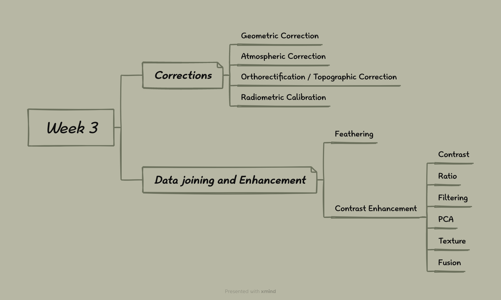

3 Week 3 - Remotely Sensed Data Corrections and Data joining and Enhancement
3.1 3.1 Content summary:
This is an outline of what I have learnt this week and I will follow these outlines to summarise the knowledge or skills I have learnt:

Mind map for the summary outline
3.1.1 3.1.1 Corrections
Because of the atmosphere, unevenness of the earth’s surface and other factors, remote sensing images are sometimes inaccurate, so we need to correct them. For example, as the scan line corrector on Landsat 7 failed, we need to correct the remotely sensed images.
Remote sensed products are now often “corrected” to “Analysis Ready Data” (ARD), for instance, Landsat ARD products are processed through LEDPAS and L8SR algorithms to achieve surface reflectance standards, utilizing advanced algorithms and data processing techniques like LaSRC to provide users with processed surface reflectance data. However, when dealing with data not processed as ARD (e.g., very high resolution, drone data), understanding how the data was created remains crucial.
3.1.1.1 3.1.1.1 Geometric Correction
Geometric correction involves correcting spatial distortions in remote sensed images caused by the sensor’s angle, uneven ground, wind (from plane) and and Rotation of the earth (from satellite).
How:
It eliminates spatial biases by resampling and transforming images based on ground control points or other reference data to correct their spatial positions.
Corrected by who:
Remote sensing data providers or professional users (who need to ensure spatial accuracy of the remotely sensed data)
3.1.1.2 3.1.1.2 Atmospheric Correction
It deals with the effects of atmospheric scattering and absorption (or Topographic attenuation) in remote sensing images to obtain the true reflectance of the Earth’s surface.
Why is it unnecessary in some cases？
Atmospheric correction is often unnecessary when classifying a single image, independently classifying multi-date imagery, creating composite images, or using training data extracted from all data, as the precise correction of atmospheric factors has limited impact on the final outcomes in these scenarios.
How:
Atmospheric correction could be achieved through relative methods, such as normalizing the intensities of different bands within a single image, normalizing intensities of bands from many dates to one, dark object subtraction (DOS), or histogram adjustment to approximate the elimination of atmospheric effects. Absolute methods convert digital brightness values into scaled surface reflectance using atmospheric radiative transfer models, but it requires atmospheric models, local atmospheric visibility data, and tools like ACORN, FLAASH, etc.
In the practical of this week, we use Dark Object Subtraction (DOS). It is a simple and effective method for atmospheric correction that reduces atmospheric effects by identifying the atmospheric scatter value represented by the darkest pixel in an image and subtracting it from the entire image.
Corrected by who:
Primarily carried out by data providers or specialized researchers using dedicated software, aimed at eliminating atmospheric effects to obtain true surface reflectance.
3.1.1.3 3.1.1.3 Orthorectification / Topographic Correction
Orthorectification / topographic correction involves correcting deformations caused by terrain in images using terrain information, giving them true map geometric characteristics. It requires sensor geometry and an elevation model.
How:
Orthorectification / topographic correction involves removing terrain-induced distortions in images by considering sensor geometry and utilizing a Digital Elevation Model (DEM), ensuring each pixel is depicted as if captured from directly overhead for a clear, terrain-unaffected image. This process typically involves using specialized software (e.g., QGIS, SAGA GIS, or R packages like topocorr and RStoolbox) and formulas (e.g., cosine correction, Minnaert correction, etc.) to achieve this.
Corrected by who:
It is typically done by data providers as a preprocessing step or customized by researchers using GIS software as needed.
3.1.1.4 3.1.1.4 Radiometric Calibration
Radiometric correction is the process of adjusting remote sensing data to eliminate effects caused by sensor characteristics and atmospheric conditions, making the data reflect true surface radiometric properties.
How:
Radiometric correction is achieved by applying calibration parameters (such as gain and bias) to each pixel value of the digital image, converting digital number (DN) to spectral radiance.
Corrected by who:
By remote sensing data providers for basic processing or by end-users for more in-depth corrections to meet specific application requirements.
Summary of the jargon:
Digital Number (DN): It is an uncalibrated value representing the intensity of electromagnetic radiation of a pixel, without any unit.
Spectral Radiance: It is the amount of light within a band from a sensor in the field of view per unit area, solid angle, and wavelength, measured in W/m²/sr/μm.
Sensor Calibration (Gain and Bias): It defines the relationship between digital number and spectral radiance through gain and bias parameters.
Top of Atmosphere (TOA) Radiance: It refers to the amount of light in meaningful units observed by the sensor, including effects of light source, atmosphere, and surface material.
Reflectance: It is the ratio of the amount of light reflected by a target to the amount of light it receives, an inherent property of the material.
Top of Atmosphere (TOA) Reflectance: It is the radiance adjusted to remove effects of the light source, reflecting the inherent properties of surface materials.
Surface Reflectance: It is the reflectance with light source and atmospheric effects removed, more accurately representing the reflective characteristics of surface materials.
3.1.2 3.1.2 Data joining and enhancement
3.1.2.1 3.1.2.1 Feathering
Data Joining:
It refers to the process in remote sensing of merging multiple datasets (such as images) into one continuous large image or mosaic, commonly known as mosaicking. ‘Mosaicking in with a standard method isn’t appropriate for satellite imagery’.
Feathering:
It is an image processing technique used to smooth the transition area between images in remote sensing data joining, eliminating seam lines to create a seamless image mosaic.
Method of Feathering: It involves sampling representative samples within the overlap area, adjusting image brightness values using a histogram matching algorithm to achieve a smooth brightness transition between the two images.
Practical:
When a single image does not cover the entire study area, downloading two or more satellite image tiles and mosaicking (or merging) them together, using functions like ‘mosaic’ in the ‘terra’ library for an average merge, could extend the coverage of the study area.
3.1.2.2 3.1.2.2 Image enhancement
Image enhancement is the process of improving the visual appearance or results of an image by increasing the contrast and distinguishability between features in the image.
Contrast Enhancement:
Enhancing the contrast of an image by expanding its dynamic range, making the light and dark areas more pronounced.
Usage: Achieved through methods like minimum-maximum, percentage linear and standard deviation, piecewise linear contrast stretch.
Ratio:
Ratio image enhancement is a technique that emphasizes or reveals specific landscape features by calculating the ratio of values between two spectral bands.
Usage: For instance, the Normalized Burn Ratio (NBR) highlights burned areas or vegetation health by calculating the ratio of the difference to the sum of the Near-Infrared (NIR) and Short-Wave Infrared (SWIR) bands.
Practical:
Ratio is a method that emphasizes or exaggerates certain landscape features based on the characteristic that healthy vegetation has higher reflectance in the NIR and absorbs more in the Red wavelength. The Normalized Difference Vegetation Index (NDVI) uses this trait to highlight areas of healthy vegetation.
In R, NDVI can be calculated using a specific formula, and the data can then be reclassified to highlight areas where NDVI is equal to or greater than 0.2.
Filtering:
Improving image quality by applying low-pass (smoothing local variations) or high-pass (enhancing local details) filters to the image.
Usage: Low-pass filtering smooths the image by summing all pixels in a 3x3 window and dividing by 9; high-pass filtering is used to highlight edges and texture in the image.
Practical: The Laplacian filter can be used to enhance edges and details in an image. In R, a 3x3 window filter could be applied to a specific band using the focal function from the terra package.
PCA:
A technique to transform multispectral data into an uncorrelated smaller dataset, retaining most of the original information and reducing future computational load.
Usage: Applied by using functions like ‘prcomp()’ in the ‘terra’ package, extracting principal components based on the principle of maximizing variance within the dataset.
Practical:
Principal Component Analysis (PCA) aims to reduce the dimensionality of data. By centering and scaling the data, it allows for the comparison of data measured in different ways (e.g., spectral and texture data). PCA takes advantage of multicollinearity to create new, uncorrelated variables.
In R, PCA can be performed using the prcomp function, and the PCA analysis results can be mapped using the predict function.
Texture:
It reveals surface structure and compositional features focusing on the spatial variation of grayscale values in an image.
Usage: Enhancing image texture by calculating first-order (occurrences) and second-order (relationships between pixel pairs) statistics, and applying co-occurrence matrices to analyze the angular relationships and distances between pixels.
Practical:
Texture analysis aims to identify the relationships between pixels in an image, often wanting to see how pixel-to-pixel relationships differ in different parts of the image. By calculating the GLCM for small areas and then recording its texture measure to cover the entire image, the variation in pixel relationships across different locations can be quantified.
In R, the ‘GLCMTextures’ package is able to be used to compute texture, and the original data may need to be converted back to a float for use.
Fusion:
Combining data from multiple sensors/sources to enhance the resolution and quality of an image.
Usage: In Landsat data, multispectral data (30m) can be sharpened by fusion with the panchromatic band (15m), typically applied to visible bands.
Practical:
Data fusion is the process of appending new raster data to existing data or making a new raster dataset with different bands, which could be done by combining the texture measure (and the original spectral data) with the existing data.
In R, the texture data and original data can be combined using the ‘c’ function from the ‘terra’ package.
3.2 3.2 Applications of the content:
As I mentioned in my summary, although many remote sensing image products have now been corrected by data providers, there are also images that are uncorrected or require more demanding corrections. According to Aasen et al. (2018), the article discusses sensor technology, measurement procedures, and data correction workflows (workflows graph as shown below (‘Empirical Line Correction’, which is covered in our lecture)) in UAV spectral remote sensing, including geometric processing, radiometric calibration, scene reflectance generation, and scene reflectance correction. These correction techniques help in accurately representing the energy reflected from the environment as pixels in a data product. The article provides a comprehensive evaluation of the state-of-the-art methods in UAV spectral remote sensing, incorporating over a decade of experimentation and operational demonstrations to offer clear guidance for acquiring reliable data. Despite providing detailed techniques and correction workflows, implementing these complex techniques and processes may be challenging for beginners and small project teams.
Data correction workflows (Aasen et al., 2018)
Ratio enhancement is widely used in reality and NDVI is a very popular application of ratio enhancement, so the application of NDVI is crucial. NDVI (Normalized Difference Vegetation Index) is a numerical indicator that uses the visible and near-infrared bands of the electromagnetic spectrum to assess vegetation health and density. It is calculated using the following formula:
There are several papers mentioning the application of NDVI, but certainly the application of NDVI has some disadvantages besides the advantages. Sims et al. (2014) uses NDVI as the main tool to assess vegetation responses to drought, finding that forest ecosystems maintain higher greenness compared to non-forest ecosystems under drought conditions, with little change in greenness even under extreme drought. In this essay, NDVI assists in improving predictions of water stress impacts on forest ecosystems at low spectral sensitivity levels by demonstrating differences in drought sensitivity among ecosystems (Sims et al., 2014). For example, predicting declines in carbon uptake in forest ecosystems by observing NDVI declines in adjacent ecosystems with high spectral sensitivity (Sims et al., 2014). NDVI could reveal differential responses of forest and non-forest ecosystems to drought, providing an effective tool for predicting and assessing carbon uptake in forest ecosystems under global climate change (Sims et al., 2014). However, NDVI may saturate in dense forest systems, limiting its ability to accurately reflect physiological responses of forest ecosystems under extreme drought conditions.
In addition, NDVI is utilized as a tool to monitor the performance and changes of certain strategic crops in Egypt throughout the growing season, showcasing a time series analysis of crop growth stages and vegetation health (Farg et al., 2019).

The application of NDVI on the crop (‘Different NDVI for June, July and September for the study area.’) (Farg et al., 2019)
NDVI shows the capability for accurate crop classification under complex terrain conditions, enhancing the precision of crop discrimination through analysis of remote sensing data over different periods (Farg et al., 2019). Although time-series analysis based on NDVI is instrumental in understanding crop growth and health, it may not be sufficiently sensitive to the minute spectral variations among different crop types. This limitation is particularly pronounced in the initial phases of crop development, which could affect the precise identification and categorization of certain crop types.
3.3 3.3 Personal reflection:
This week’s summary section is organised in a more textual way. Although I have studied remote sensing in my undergraduate studies and have worked with some of the applications of remotely sensing, we have only had a superficial understanding of image correction because many remote sensing imagery products have been corrected in their own right. In this week’s work, we covered a lot of knowledge and skills of image corrections and image enhancement, and I would like to make up for my shortcomings, so I’ve put together more of a basics section.
Although the principles of the correction technique for remotely sensed images are difficult, the technique could be applied to high-resolution images taken by UAVs and is constantly being developed, which is probably one of the reasons why the technique is so attractive. Data correction is an early stage in the processing and analysis of remotely sensed data (and is needed anyway, even though much of the data that may be available to the user may have already been corrected by the data provider) and is very important and meaningful, as it is the foundation of all analyses related to remotely sensed data. If the individual works in a company related to remotely sensed image processing, then the correction of remotely sensed images may be a necessary element to master.
Before studying this course, image enhancement was something I was exposed to a lot, especially ratio enhancement. Image enhancement makes it easier to recognise and extract features of water bodies, plants and other features. This part is also very widely used in reality. In China, the Bureau of Natural Resources often uses image enhancement to survey natural resources such as forests and so on.
Overall, I have learnt knowledge and skills in remotely sensed image product corrections and image joining and enhancement this week.This allows me to supplement the shortcomings of my undergraduate learning content to some extent, and enriches my knowledge, which may allow me to be more competitive in my future job.
3.4 3.4 Reference list
Aasen, H., Honkavaara, E., Lucieer, A., & Zarco-Tejada, P. J. (2018) Quantitative Remote Sensing at Ultra-High Resolution with UAV Spectroscopy: A Review of Sensor Technology, Measurement Procedures, and Data Correction Workflows. Remote sensing (Basel, Switzerland). [Online] 10 (7), 1091-. https://doi.org/10.3390/rs10071091
Farg, E., Ramadan, M. N., and Arafat, S. M. (2019) Classification of some strategic crops in Egypt using multi remotely sensing sensors and time series analysis. The Egyptian journal of remote sensing and space sciences. [Online] 22 (3), 263–270. https://doi.org/10.1016/j.ejrs.2019.07.002
Sims, D. A., Brzostek, E. R., Rahman, A. F., Dragoni, D., and Phillips, R. P. (2014) An improved approach for remotely sensing water stress impacts on forest C uptake. Global change biology. [Online] 20 (9), 2856–2866. https://doi.org/10.1111/gcb.12537